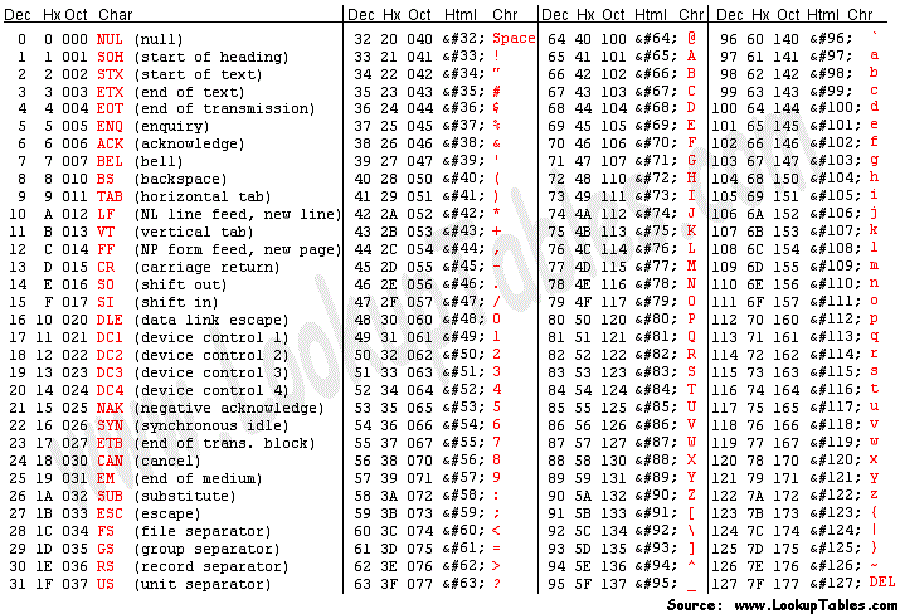
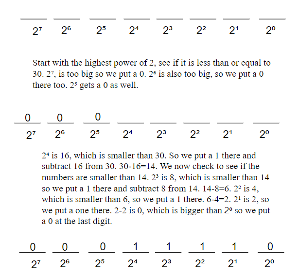

Logic Gates
We are about to step into the world of Modern Cryptology. But first, it is neccesary to undertsand Xor Encryption and logic gates.
Xor was an operation patented in 1919 for use in the Vernam cipher, which combines the binary of plaintext with teh binary bits of a key.
Xor is a type of logic gate, which means it returns true or false, with 1 being true and 0 being false. Other logic gates include and and or, the pattern of these gates is displayed in the chart below (and *, or +, and xor^).
Binary Conversions
In Xor encryption, a string of characters is converted to their binary value using an ascii table. Every letter and symbol in language has a number equivalent. These numbers are called ascii. They are shown on the ascii table below:

The table below shows the decimal value, which we can use to get the binary value. Decimal numbers are base 10, they are what we are taught to count in, there are 10 basic numbers:0, 1, 2, 3...9. Binary numbers are in base 2, so they only have 1s and 0s. Each binary number has 8 bits (so 8 spots for a one or a zero)
We are going to convert 30 from decimal to binary to show you how it is done.
